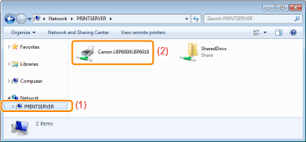

»
Using the Printer in the Print Server Environment
»
Installation on Clients
»
Installing from [Windows Explorer]
|
Installing from [Windows Explorer]
1
Turn the computer on, and then log on to Windows.
2
Display [Windows Explorer].
From the [Start] menu, select [All Programs] or [Programs] → [Accessories] → [Windows Explorer].
3
Perform the following procedure.
(1)
Select the print server from [Network] or [My Network Places].
(2)
Double-click the shared printer icon or drag and drop the icon into the printer folder.

4
Follow the on-screen instructions to install the printer driver.